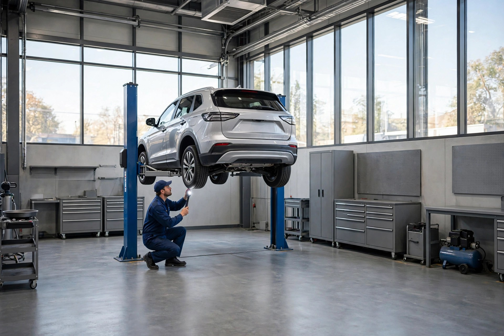
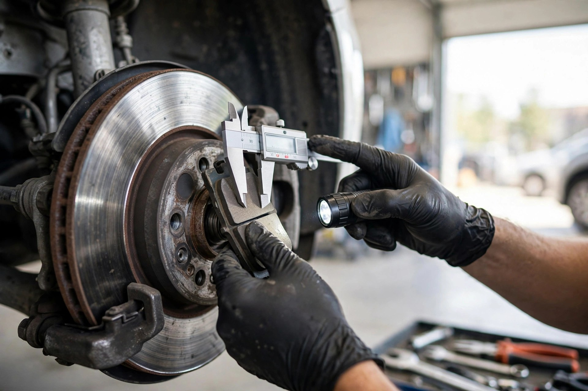

Mécanique générale
Entretien et réparation toutes marques — de la routine aux réparations complexes.

Joliette, Québec · Atelier de réparation automobile
Entretien, freins, pneus et diagnostic — un travail honnête par des pros qualifiés, noté 4,7/5 par 95 clients.
Ce que nous faisons
Entretien et réparation toutes marques — de la routine aux réparations complexes.
Plaquettes, disques et inspection complète du système de freinage.
Vente, pose, permutation et équilibrage — changements saisonniers inclus.
On trouve le vrai problème au lieu de deviner — et on vous l'explique.
Huile de qualité pour la performance de votre moteur — tous véhicules.
Inspections et entretiens planifiés pour garder votre véhicule en parfait état.

Pourquoi nous choisir
Des pros qualifiés, un diagnostic juste et un prix expliqué d'avance. Vous repartez en sachant exactement ce qui a été fait — et pourquoi.
L'atelier en action
Ils en parlent
Bon à savoir
Appelez-nous au (450) 759-1741 pour réserver — on planifie votre visite au moment qui vous convient.
Oui — autos, VUS et camions légers de toutes marques.
Du lundi au jeudi, de 8 h à 17 h. Fermé du vendredi au dimanche.
Toujours — le prix est confirmé avec vous avant qu'on touche à votre véhicule.
Venez nous voir